Local production evidence · 2026-10-25. Exact supplied mark. Owner-confirmed founder identity. Candidate projects remain drafts; original portrait and contact destination await confirmation.
Viewport captures below are the primary visual review; very tall full-page captures are supplemental. Automated audits do not certify WCAG or real-user performance.
Validation and limitations · Production HTML · Heading audit · Internal links · Browser checks · Performance summary
lighthouse-desktop.report.html
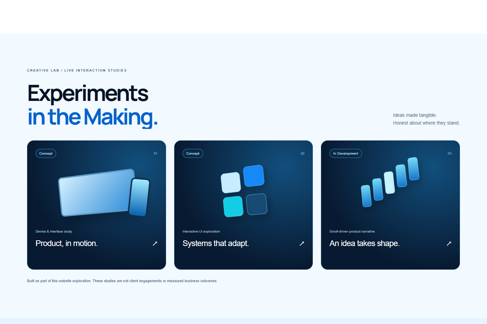
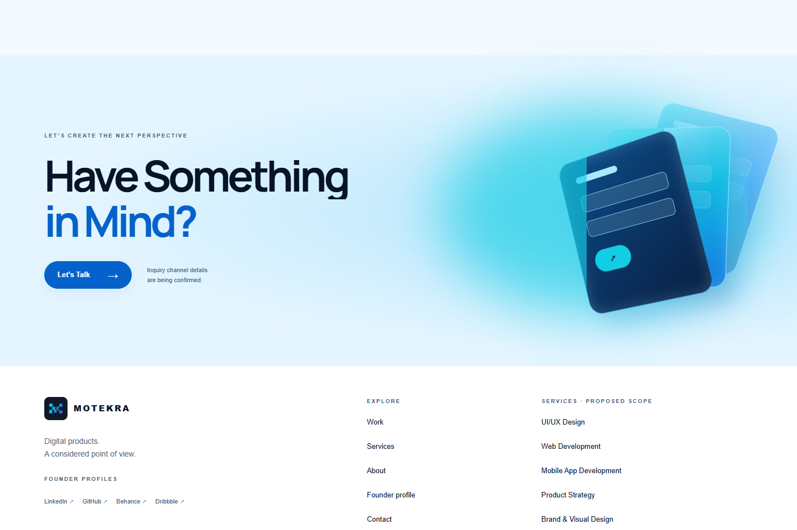
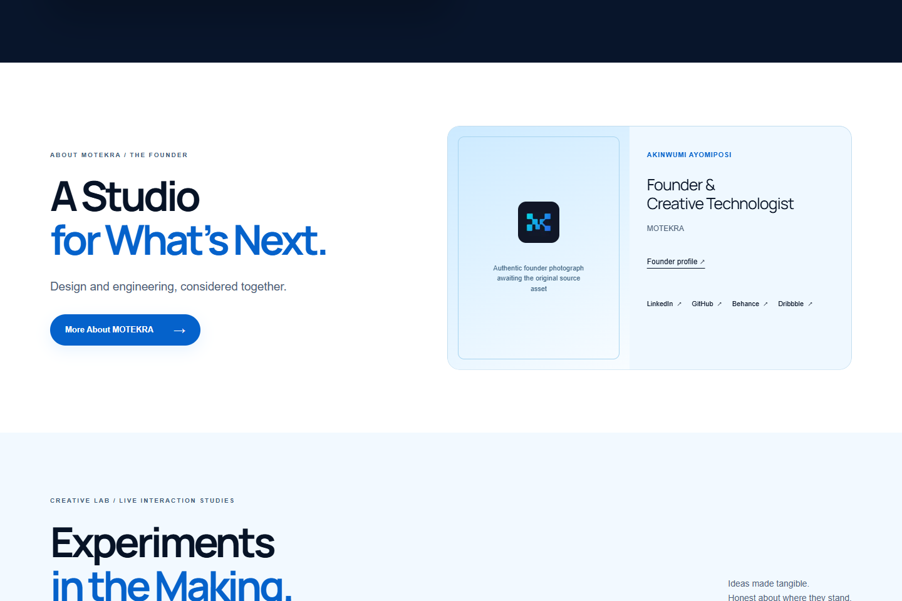
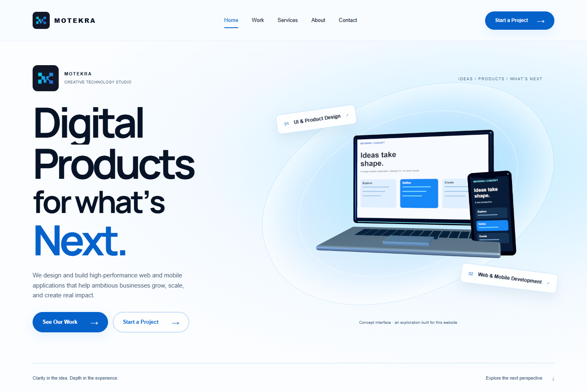
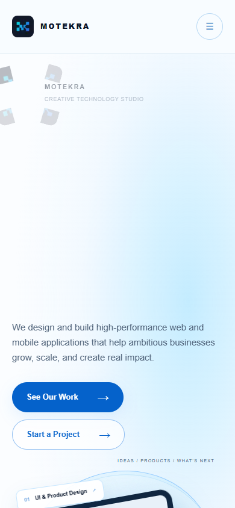
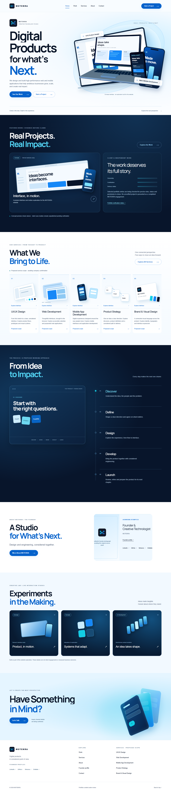
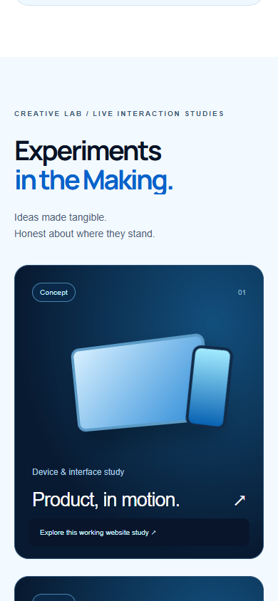
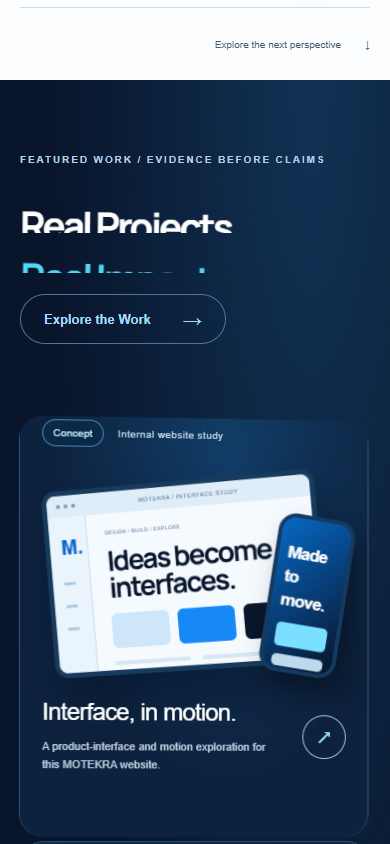
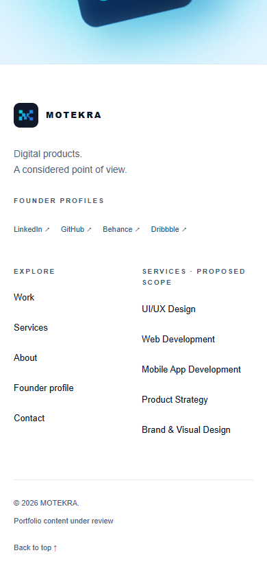
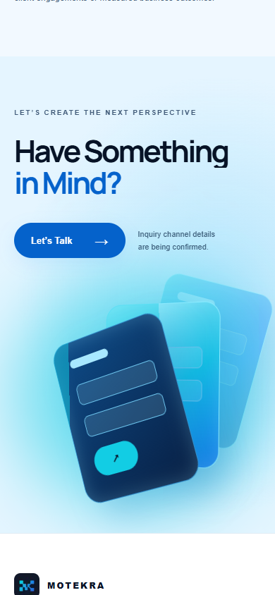
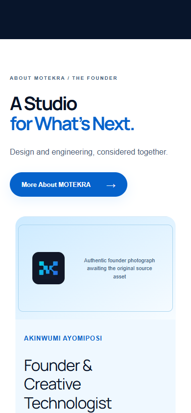
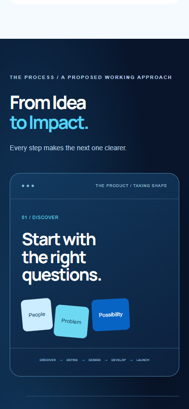
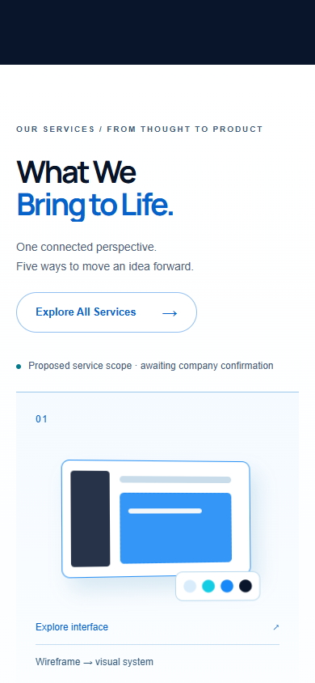
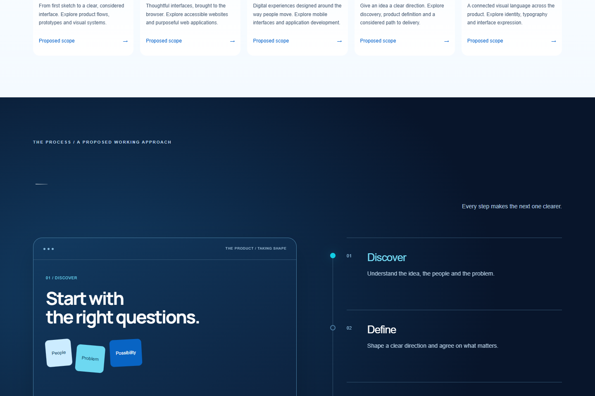
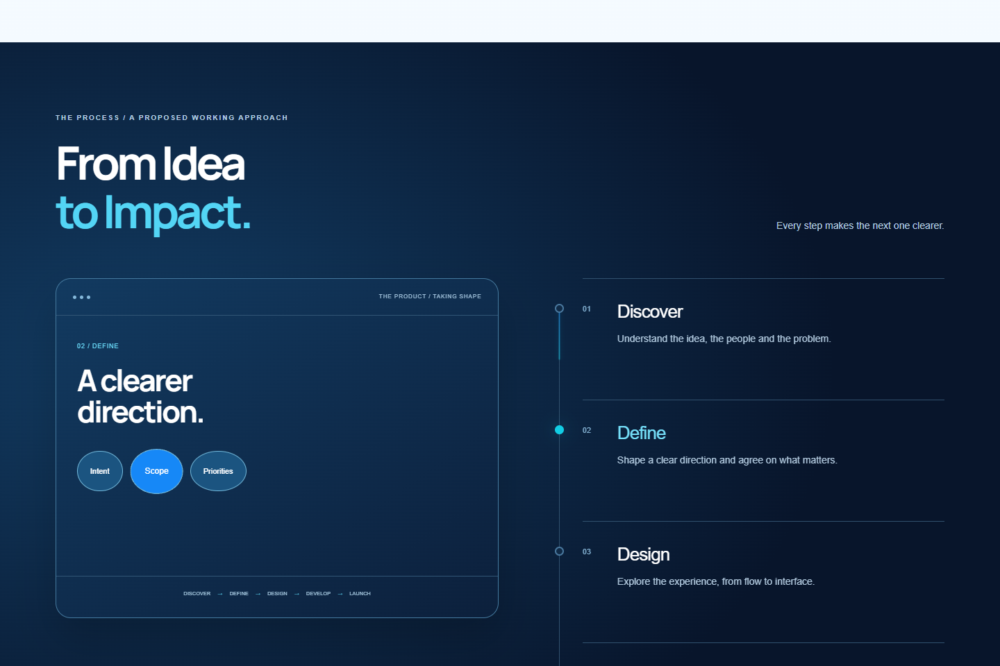
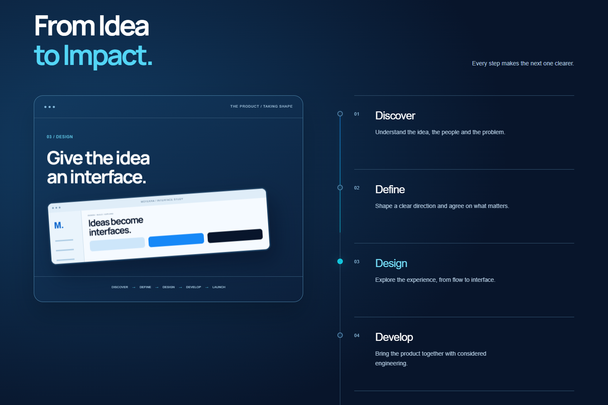
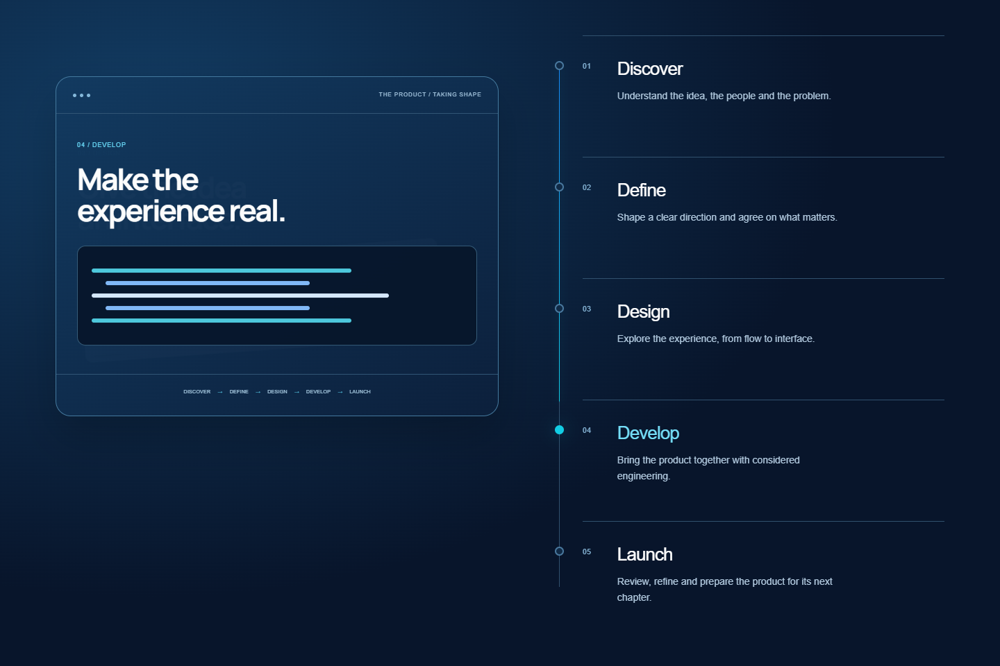
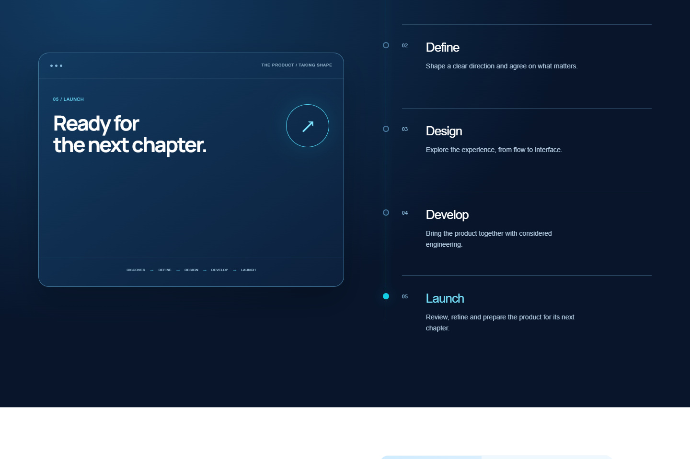
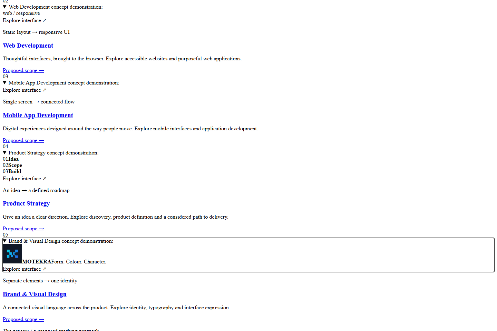